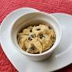

Cookie Dough

This edible cookie dough recipe is egg-free and will satisfy any cravings for chocolate chip cookies without the wait.
Ingredients
- 1 cup all-purpose flour
- 3/4 cup packed brown sugar
- 1/2 cup butter
- 1 teaspoon vanilla extract
- 1/2 teaspoon salt
- 2 tablespoons milk
- 1/2 cup milk chocolate chips
- 1/2 cup mini chocolate chips
Directions
- Place flour in microwave-safe dish and cook for 1 minute 15 seconds, stirirng every 15 seconds
- Beat sugar and butter in large bowl until creamy. Beat vanilla extract and salt.
- Add heat treated flour
- Mix until crumbly dough forms.
- Stir in milk until dough is combined
- Fold in chocolate chips